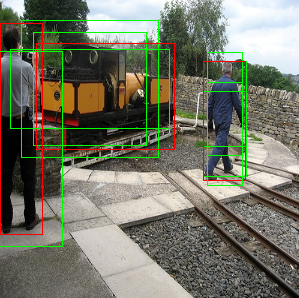

SSD
Table of Contents
1 SSD
1.1 anchor
ssd 的 anchor 参考了 Region Proposal Network, 但不包含 objectness confidence.
与 yolo 的 cell 类似, ssd 会分配 2268 个 anchor (以 mobilenet backbone 为例), 但 这些 anchor 并不是像 yolo 那样在原始图片上均匀分配的:
ssd 网络由许多层 conv 组成, 它选择了其中 6 层, 其 feature map 尺寸分别为 [19x19, 10x10, 5x5, 3x3, 2x2, 1x1], 然后在这些不同 level 的 feature map 上分别分配了不同数量的 anchor.
例如:
ssd 使用的 mobilenet 的 `out_relu` 层的 feature map 大小为 [1, 19, 19, 576], 接 一个 conv2d (4*4, kernel=3,strides=1,padding=same), 输出为 19*19*4*4, 对应 19*19*4 个 anchor
每个 level 的 feature map 上的点对应多个大小和形状不同的 anchor:
lvl_0 每个点对应 2 个正方形的 anchor 和 2 个长方形的 anchor lvl_1 每个点对应 2 个正方形的 anchor 和 4 个长方形的 anchor …
各个 level 的 anchor 个数分别为:
19*19*(2+2) = 1444 100*(2+4) = 600 25*(2+4) = 150 9*(2+4) = 54 4*(2+2) = 16 1*(2+2) = 4
一共 2268 个 anchor
通过这个基于 level 的分配方式, ssd 可以用来检测大小不同的物体: lvl_0 对应较小的 物体, lvl_5 对应较大的物体
1.2 label
VOC2007 dataset 的 label 只有 box 的坐标和分类, ssd 需要先经过预处理, 针对所有 anchor 生成 label 数据, 以便和网络的输出能对应起来计算 loss.
假设标签数据中有两个 box:
<object> <name>boat</name> <bndbox> <xmin>89</xmin> <ymin>213</ymin> <xmax>432</xmax> <ymax>301</ymax> </bndbox> </object> <object> <name>boat</name> <bndbox> <xmin>235</xmin> <ymin>280</ymin> <xmax>384</xmax> <ymax>313</ymax> </bndbox> </object>
先定义几个名词:
- anchor, 表示 gen_anchors 生成的 anchor, 每个 anchor 有它的坐标
- box, 表示 box 的原始坐标
- rel_box, 表示 anchor 对应的 box 相对于 anchor 中心的坐标
预处理也可以称为 encode, 是根据 (box, anchor) 获得 rel_box 做为 label, 具体步骤为:
- 针对所有 [anchor, box] 需要计算 IOU 值, 例如 iou[2266]=[0.54030361,0.58199], 表示 anchors[2266] 和 boxes[0] 的 iou 为 0.54030361, 和 boxes[1] 的 iou 为 0.58199
- 针对每一个 anchor (A), 计算它和哪个 box (B) 重合最大
- 把 B 的坐标转换为相对于 A 的坐标, 作为其 rel_box, 并且记下 B 的 class
- 对于 iou 小于一定 threshold 的 anchor, 标记它的 class 为 `unknown`
例如:
假充 box 为 [0.05333333333333334, 0.306, 0.8466666666666667, 0.964], 则有 6 个 anchor 和它的 iou 足够大:
另外一个基于真实图片的例子: iou threshold 分别为 0.5 和 0.4

ssd 查找 box 对应的 anchor 的过程和 yolo 查找 box 由哪个 cell 负责有些类似, 只不 过 yolo 是根据 box 的中心落在哪个 cell 内, 而 ssd 是根据 iou.
1.3 network
这个图片是 ssd 使用 Vgg16 做 backbone 时的模型 (前面描述尺寸的都是基于 mobienet), 6 个 level 的 feature map 为 [38, 19, 10, 5, 3, 1], 共 8732 个 anchor
每个 feature map 通过 Classifier 生成对应数量的 anchor, 最后通过 concat 拼成 8732 个 anchor 的预测值.
在 Classifier: Conv: 3x3x(4x(Classes+4)) 为例:
kernel=(3,3), output_channel=(4x(Classes+4)), stride=1, padding=same
其中 output_channel=(4x(Classes+4)) 表示一个点有 4 个 rel_box, 每个 box 有 Classes (21) 个 class confidence 以及 4 个坐标
标准的 ssd 的网络没有区别 backbone 和 detection head, 和 rpn 相比显得不太灵活
1.4 inference
以 mobilenet 为例, ssd 模型的输出有两个:
- confs: [2268, 21], 表示每个 rel_box 所属的 class
- locs: [2268, 4], 表示每个 rel_box 的坐标
后处理时需要:
- decode, 根据 locs (rel_box) 和 anchor 获得 box, 这个操作与 encode 相反.
- 通过 argsmax(confs) 找到每个 rel_box 是哪个 class, 并把 max(confs) 做为 NMS score
- NMS
1.5 loss
ssd 的 loss 分为两部分:
locs loss
针对 2268 个 rel_box 的 loc (rel_box 坐标) 计算 l1 loss.
locs loss 只考虑正样本, 即如果 rel_box 的 class 是 `unknown`, 则不需要计算 locs loss, 因为并没有对应的标签数据
confs loss
针对 2268 个 rel_box 的 conf (confidence) 计算 cross entropy.
由于 2268 个 rel_box 里有大量的负样本 (class 为 `unknown`), 为了平衡数据, 使用 hard negative mining 的方式选择误差最大的 N 个负样本参与 confs loss 计算
Backlinks
Object Detection (Object Detection > SSD): SSD
Region Proposal Network (Faster RCNN > Region Proposal Network): yolo 和 ssd 的 anchor/cell 的设计直接参考了 rpn
YOLO (YOLO > cell): 这一点与 ssd 有些类似: 只有标签中的 pos_index 才会参与 loc_loss 的计算, 只不过 pos_index 是通过计算 anchor 与 box 的 iou 来确定的, 而不是像 yolo 这样通过中心位 置.
rpn (Point Pillars > network > rpn): 标准 ssd 可以看做 backbone 和 detection head 是放在一起的, 每个 level 的 feature 直接 encode 了 (class, coord).